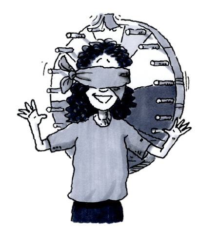
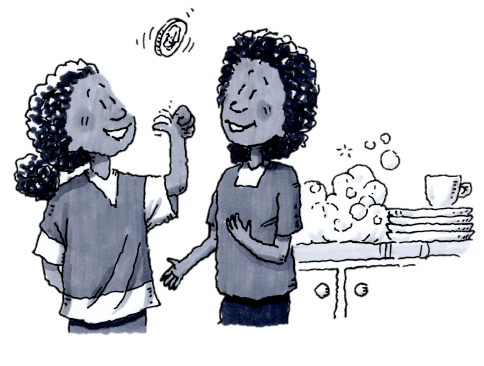
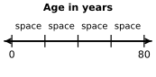
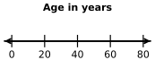
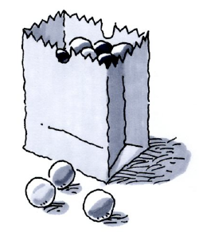
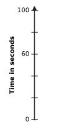
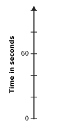
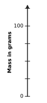
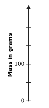

How can I use probability to make predictions?
Investigating Probability
Have you ever tried to predict which football team will win a big game? If so, you probably did not just pick the team with the coolest colors or the neatest mascot. You may have based your pick on statistics about win-loss records, player injuries, and other data. Knowing what has happened in the past can sometimes help you predict what will happen in the future. In this lesson, you will use data to make predictions.
As you work with your team to uncover a mystery spinner, keep the questions below in mind.
What is the probability or likelihood?
What do we expect to happen?
How does the actual event compare to our prediction?
What can we know for sure?
THE MYSTERY SPINNER

Your teacher has a hidden spinner. Your challenge is to perform an experiment that will allow you to predict what the spinner looks like without ever seeing it.
Your Task: Your teacher will spin the spinner and announce each result. During the experiment, you will consider several questions about the results and about the hidden spinner. However, you will not be allowed to see it. Using the information you get, work with your team to figure out what the spinner looks like. When you think you know what it looks like, draw a diagram of the spinner.
Use the data you collected in problem 1-63 to answer the following questions.
Based on your data, how can you describe the likelihood of landing on each part of the spinner? How does the spinner that your team drew represent these likelihoods? Be prepared to share your ideas with the class.
Use your data to write the experimental probability of each of the following results as a fraction, a decimal, and a percent.
The spinner lands on purple.
The spinner lands on green or orange.
If your teacher were to spin the spinner more times, how might this change your answers for part (b)?
Do you know for sure that the spinner you drew in problem 1-63 looks exactly like your teacher’s? Are you certain that the portions that you drew for each color are the same size as the portions on your teacher’s spinner? Why or why not?
Now your teacher will reveal the mystery spinner.
How does your team’s spinner compare to the actual spinner? Discuss the similarities and differences.
Do your spinner and your teacher’s spinner show the same likelihood for each section being spun? Explain why or why not.
One way to compare your spinner and your teacher’s spinner is to calculate the theoretical probability for each colored section of your teacher’s spinner.
What are some reasons the experimental probability and the theoretical probability for any section of the spinner could be different?
Estimate the theoretical probability for getting each color on your teacher’s spinner.
How do the experimental probabilities (based on your class data) and the theoretical probabilities (based on the actual spinner) compare? How do you think they would compare if there were twice as many spins made? What about three times as many spins?
If you were to spin the spinner the number of times listed below, how many times would you expect it to land on orange? Explain how you found your answers.
times
times
Approximately how many times would you expect to land on orange if you were to spin times?

Rachel and her little sister Christie often argue about who should wash the dishes at their house. Rachel suggests that they flip coins to solve their argument.“Flipping a coin is fair, since heads and tails each have an equal chance of happening. Each one has a probability of ,” Rachel says. “If the coin shows heads, then I do the dishes. If it shows tails, then you do them.”
Is this system fair? That is, does each girl have an equal likelihood of washing the dishes each day? What is the theoretical probability for heads? For tails?
Rachel and Christie flip a coin every evening for the first week. Christie has washed the dishes four times, and Rachel has washed the dishes three times. Christie tells Rachel that the system is not fair, because Christie has done the dishes more often than Rachel. Is Christie right?
After the second week of coin flipping, Christie has washed the dishes ten times and Rachel has washed the dishes four times. Now Christie is really upset at Rachel because she has washed the dishes so many times.
In light of this new information, do you think the system is fair or not fair? What would you recommend to Christie? Discuss your ideas with your team and be prepared to discuss this with the class.
Flipping a coin has a theoretical probability of for heads and for tails, unless the coin is “rigged.” Over the course of a large number of flips, each of the two outcomes will be closer to the theoretical probability () than they will for a few flips. But is it possible to determine the theoretical probability in every situation?
You will think about theoretical probability more in parts (a) through (e) below. It will help you to know that a standard deck of playing cards has four suits: spades and clubs, which are black, and hearts and diamonds, which are red. Each suit has cards: cards numbered through , three “face” cards (a jack, a queen, and a king), and an ace. It will also be helpful to know that a standard number cube, also called a die (plural: dice), has six sides. Each side has a different number of dots, through .
Look at the situations below and decide with your team if you can find a theoretical probability for each one. If you decide that you can find the theoretical probability, then do so.
Picking an Ace from a standard -card deck.
Not rolling a on a standard number cube.
The chances of a thumbtack landing with its point up or on its side.
Getting the one red crayon from a set of eight different-color crayons.
The likelihood that you will run out of gas on a long car trip.
Additional Challenge: Three friends join together and form a club. They want to select one of themselves randomly to be the club’s leader. Describe how they can do this fairly using only a coin.
Methods & Meanings
Scaling Axes
The numbers on each axis of a graph or a number line show the scaling of the axes. The difference between consecutive markings tells the size of the interval. When you scale each axis, you must use equal intervals to represent the data accurately. For example, an interval of creates a scale numbered , , , , , , , etc. Unequal intervals distort the relationship in the data.
Notice on the graph at right that marks the end of the fourth interval from zero. If you divide years by you can see the length of an interval on this graph is .

The second graph at right has each interval labeled. Labeling the graph this way is called “scaling the axis.”

Review & Preview
Imagine that you have a bag containing marbles of different colors. You have drawn a marble, recorded its color, and replaced it fifty times, with the following results: purple, orange, yellow, and green marbles. Make a prediction for how many marbles of each color are in the bag. Show all of your work or explain your reasoning.

A fair number cube with the numbers , , , , , and is rolled.
What is the probability of getting an even number?
What is the probability of getting a factor of ?
Ramon is saving per week to buy a new cell phone. The phone he wants costs . For how many weeks will he need to save his money? First, estimate your answer. Then figure out the actual number of weeks.
If inches is equal to feet, how many feet is a -inch board? A -inch board? A -inch board?
Read this lesson’s Math Notes box about scaling axes. Then, on your paper, copy the incomplete axes below and write the missing numbers on each one.



